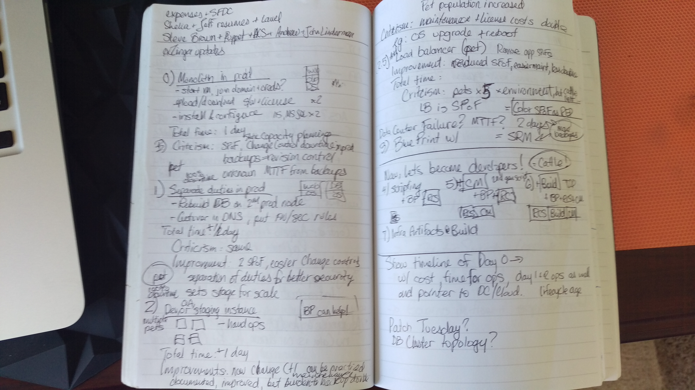
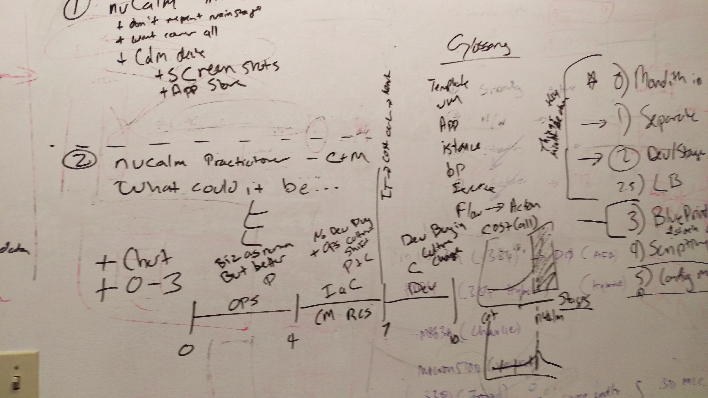
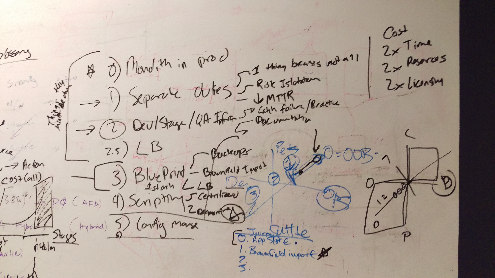
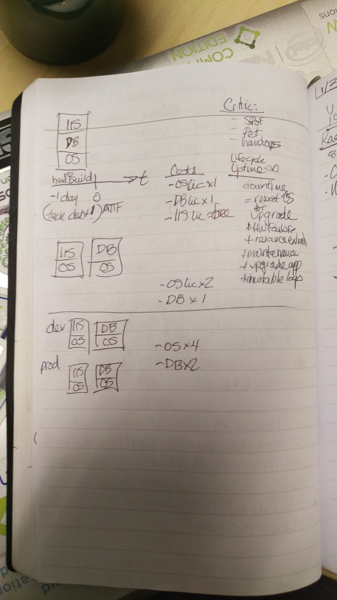

Ten Steps from Pets to Cattle
25/Jan 2017
Why do we need DevOps when IT and Operations succeed in their responsibility for security and uptime, using administrative tools to maintain, backup, and restore those systems? Because the operations domain must be documented, democratized, and distributed to achieve agility before Operations returns to become a force multiplier instead of a keep the lights on organization. Let me demonstrate that traditional values for long lived infrastructure and their retroactive justification do not apply when progressing to a DevOps mindset.
Under Construction
The following pictures in the Postscript are from my notebook and outline this article. Please return back in a week to see how I flesh out the presentation.
Overview
January 25, 2017: I gave a Calm deep dive session to my peers at Nutanix, and there were two topic requests that shed light into the DevOps world for them and provided insight (the what, who, why that Nutanix management always cites) for the Calm automation product’s value and audience for DevOps. I tried to show to progression from Pets to Cattle to answer the question, “Why do I need DevOps?” by illustrating the roughly ten steps it takes to refactor from monolith to hybrid cloud applications and to show how automation accelerates all efforts.
For the sake of reaching a larger audience, I picked a web application hosted on a Windows server with IIS web server and MS-SQL database. For this exercise, we focus on application infrastructure; a SAN or backup system target is out of scope.
Throughout this exercise, I will use a mythical, relative value of X as a unit of work and time, my guess is that it is 3 hours.
1: The Monolith in Production
- Design:
- A single server, hosting the entire application: OS + web + DB.
- Build and Deploy: X
- Built by hand
- MTTR: 0.5X
- Repair is a restoral, estimated at 0.5 build and deploy time
- Benefits:
- Easy to backup, but it requires application downtime
- Criticism:
- C1.1: A single point of failure on every infrastructure and application tier
- A single point of failure environment: no staging
- A single point of failure data center: no disaster recovery
- Downtime requires human intervention to restore
2: Separate, Monolithic Functions
- Design:
- Two servers:
- web hosts the application: OS + web
- database hosts the data: OS + DB.
- Build and Deploy: 1.5X
- Built by hand, so little parallel OS installation time savings
- MTTR: .75X
- Repair is a restoral, estimated at half the build and deploy time of this step
- Benefits:
- Separation of each function allows better management of each concern
- Easier to backup web without downtime
- Remediate C1.1: if web node is down, DB is not, and vice-versa
- Minor MTTR decrease for restoral
- Criticism:
- C2.1: Each host remains a single point of failure
- Twice the time to maintain, twice the attack surface, twice OS license cost
- Database still requires application downtime
3: Add Load Balancer and DMZ
- Design:
- Five servers:
- Load balancer for the web tier, modeled as a web proxy with IIS?
- Web tier: 2* web hosts the application: OS + web
- Database: 2* database hosts the data: OS + DB.
- Build and Deploy: 6X
- 4X: Built by hand, so little parallel OS installation time savings
- 1X: Increased time to configure Master+Minion database
- 1X: Increased time to configure OS firewalls, web proxy
- MTTR: 3X
- Repair is a restoral, estimated at half the build and deploy time of this step
- Benefits:
- A single server in the web tier can fail or be maintained without application downtime
- In theory, a master and minion database can be maintained without downtime
- On paper, 2* increased capacity for web and DB
- Application read traffic can be directed to minion to reduce load on master
- Reduced network attack surface:
- Web tier OS firewall can restrict public access to load Balancer
- Database OS firewall can restrict access to web tier servers
- Criticism:
- Load balancer is a single point of failure
- 5X the time to maintain, 5X OS license cost, 2X DB license costs
- MTTR is a larger factor
- Increased complexity to troubleshoot network
- No DMZ network for further isolation
4: Calm Blueprint for Ops
If all of the previous steps were on bare metal, then it is time to virtualize: called P2V: physical to virtual. My selfish agenda is do this on Nutanix with your hypervisor of choice because it would include Prism Central and Calm!
At this point, Calm can document the current production deployment by brownfield importing the servers as existing machines. Orchestrated operations from every change control and runbook procedural document (such as a backup, a restoral, an OS upgrade) can be added the blueprint and made a one click operations under RBAC with audits to delegate operations.
The blueprint can now be saved to revision control to insure no loss to documented operations and infrastructure: it is a start on the road to infrastructure as code and marks the transition to becoming a developer: programming ahead!
- Design: a translation of stage #4.
- 5 servers, brownfield imported
- Build and Deploy: 2X
- Estimating automation to cut down on manual operations and human error at 33% savings, then parallelization at half of that.
- However, one now adds initial blueprint development time.
- Development: 3X
- 2X: Add some time to learn and bootstrap Calm and Karan.
- 1X: minimal because brownfield import, then adding actions for each documented change control or runbook operations should be a cut and paste with minimal orchestration and variable/macro substitution.
- MTTR: 1X
- Repair is a restoral, estimated at half the build and deploy time of this step
- Benefits:
- Documented Production
- Added maintenance operations, can be delegated and audited under RBAC
- Criticism:
- We can improve!
Let’s explore what the blueprint unlocks for the future:
- With more work, one can have push button, separate environment deployments, but this is a derivative restoral in parallel and localize strategy: it can be better and this will be stage #5.
- Adding a revision control service, unless you don’t need collaboration paves the way to CI of blueprints, infrastructure, and applications. This will be stage #8.
- Adding monitoring, metrics, and logs allows on to heuristically trigger these operations: zero-click operations = self-healing, anti-fragile business. This will be stage #10.
5: Synthesis with Scripting
Cloning the blueprint from #4, one can now refactor each host to create a new VM instead, then use Powershell scripting to stand up each service from scratch. If desired, one can skip this step to proceed to configuration management.
6: Configuration Management
Cloning the blueprint from #5, one can refactor Powershell scripting to use configuration management instead. I consider this next generation scripting and the effort can benefit by bootstrapping from community contributions for web and database. Calm can orchestrate configuration management on each service host, so CM could potentially be client only without increasing the infrastructure need for supporting CM servers.
7: Infrastructure Artifacts
Creating a build script, one can now move from runtime configuration Management to build time infrastructure: this allows further testing automation and faster deployment time. The Calm blueprint can be simplified to instantiate the VM artifacts.
8: Infrastructure CI/CD
The Calm blueprint from #7 can be cloned and refactored to accept runtime arguments to the VM artifacts to be used for continuous integration as well as perform application integration testing. Calm blueprint changes could also trigger CI/CD so that every operational and governance change can also be tested!
9: Enterprise and Hybrid Clouds
The Calm blueprint from #8 can be cloned and refactored for parallel deployments to multiple hypervisors and public clouds in multiple datacenters for global application load balancing and service level agreements.
10: Heuristic Driven Operations
Adding monitoring, metrics, and logs allows on to heuristically trigger these operations: zero-click operations = self-healing, anti-fragile business.
Postscript
As mentioned in Under Construction, there is more to to add! Here are snapshots from my notes:    
X: Y template
- Design: -
- Build and Deploy: X -
- MTTR: X
- Repair is a restoral, estimated at half the build and deploy time of this step
- Benefits: -
- Criticism: -